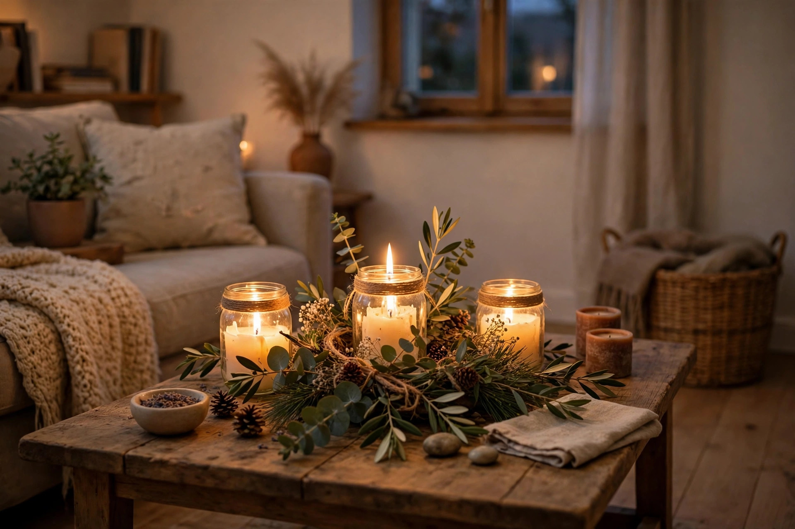

Budget Decor & DIY
DIY Candle Holders and Centrepieces Under $10
Intro
A candle on a small table does more than light a room: it makes dinner feel special, a bath feel calm and a quiet evening feel intentional. But shop candle holders can cost more than the candles inside them, and a centrepiece from a store often looks like everyone else's. The best candle holders are the ones you make from things you already own — jars, trays, greenery and a little imagination — for under $10.
This guide has 12 DIY candle holder and centrepiece ideas — jars, trays and greenery for a small table, each under $10. Start with the table you eat at most, and make one centrepiece that can stay there all week, not just for guests.

1. A jam jar with a ribbon — $1–$3
A clean jam jar, a tea light inside and a ribbon tied around the neck is a candle holder for about $2. The glass protects the flame, the ribbon adds colour, and the jar can be washed and reused. Use a jar with straight sides, so the tea light sits flat, and keep the ribbon away from the flame. Three jars in a row down the centre of a dining table make a centrepiece for under $5. This is the fastest candle holder in this guide.
2. A tray centrepiece that moves as one — $5–$8
A wooden or metal tray holds the candles, the greenery and the small decorations together, so the whole centrepiece lifts off the table in one move when you need the space. A thrift tray costs about $5. Arrange three candles of different heights on it, add a small sprig of greenery, and the tray makes the group look deliberate. A tray centrepiece is the best choice for a small table, because clearing the table takes five seconds.
3. Greenery from the garden or the park — $0–$2
A few sprigs of greenery — eucalyptus, rosemary, pine or ivy — laid around a candle make a centrepiece that smells wonderful and costs nothing. Lay the greenery flat on the tray, not touching the flame, and replace it weekly. Rosemary from a kitchen pot works all year; pine works in winter. Fresh greenery beats plastic every time, and it is free if you grow it or gather it where you are allowed to.
4. A candle in a teacup — $2–$4
A teacup from a charity shop, with a tea light or a small pillar candle inside, is a candle holder with charm for about $3. Choose a cup with a pretty pattern, and put a small saucer underneath to catch wax. Teacup candles suit a bedside table, a bathroom shelf or a small dining table, where a large candle would dominate. One teacup candle is a gift; three in a row are a centrepiece.
5. Painted jars for coloured light — $3–$5
Paint the outside of a glass jar with a thin layer of glass paint or watered-down acrylic, and the candlelight glows through in colour. Paint and a jar cost about $4. Use one colour per jar, and keep the paint thin — too thick and no light gets through. Amber, sage and soft pink all glow warmly. Painted jars look best in a group of three, in the same colour family, on a dark table where the glow shows.
6. A centrepiece from a chopping board — $3–$6
A wooden chopping board is a centrepiece base: it is flat, heat-resistant and already in the kitchen. A small board costs about $5, or use one you own. Put two candles, a small vase and a sprig of greenery on it, and the board turns a collection of things into a centrepiece. A board centrepiece works on a dining table, a coffee table or a windowsill, and it wipes clean after dinner. Choose a board with a handle, so it carries easily.
7. Floating candles in a bowl of water — $3–$5
A wide, shallow bowl filled with water, with floating tea lights and a few flower heads or leaves on the surface, is a centrepiece that costs about $4 and looks like a spa. Use a bowl you already own, add water, and float three tea lights. Keep the bowl away from the table edge, and never leave floating candles burning unattended. This centrepiece suits a special dinner or a relaxing evening, and it takes two minutes to make.
8. A candle holder from a tin can — $0–$2
A clean tin can, painted or wrapped in twine, holds a pillar candle for free. Punch a pattern of small holes in the can with a nail, and the light shines through in dots. A can and a length of twine cost about $1. Sand the cut edge smooth, so no one cuts a finger, and keep the can on a saucer to catch wax. Tin-can holders suit a balcony, a garden table or a rustic room, where their roughness looks intentional.
9. Candles of different heights, one colour — $5–$8
Three pillar candles in the same colour — cream, sage or terracotta — in three different heights, grouped tightly together, look like a designer centrepiece for about $7. The heights matter more than the holders: vary them by at least 5 cm each, so the group has a shape. Put the tallest at the back and the shortest at the front, and keep them on a tray or a board. One colour keeps the group calm; mixed colours can look like a birthday cake.
10. A seasonal centrepiece that changes monthly — $2–$4
A centrepiece that changes with the season costs almost nothing: pinecones and cinnamon in winter, fresh flowers in spring, shells and sand in summer, dried leaves in autumn. The base — a tray, a board or a bowl — stays the same, and only the decorations change. Keep a small box of seasonal bits, and swap the centrepiece in five minutes on the first of the month. A changing centrepiece keeps a small table feeling fresh all year, for the price of a walk outside.
11. A lantern from a large jar — $4–$7
A large jar with a wire handle becomes a lantern: a pillar candle inside, the handle for carrying, and the glass to protect the flame. A large jar costs about $4, wire about $2. Lanterns suit a balcony, a hallway or a bathroom, where a naked flame would be risky. Hang the lantern from a hook, or set it on the floor beside the sofa for a soft glow. A jar lantern is the safest candle holder in this guide, because the flame is fully enclosed.
12. One candle, lit every evening — $0
The cheapest idea costs nothing: light the candle you already own, every evening, at the same time. A single candle on a saucer, lit at dinner, makes an ordinary evening feel special — and a candle that is never lit is just decoration. Keep the matches beside it, trim the wick, and let the candle burn for an hour. In a small flat, one lit candle does more than a shelf of unlit ones.
Conclusion
A candle holder does not need to be bought — it needs to be safe, simple and suited to the table it sits on. A jam jar, a tray, a teacup or a tin can can each hold a candle beautifully for under $10, and a centrepiece that moves as one piece will actually be used, not just looked at. Make one centrepiece for the table you eat at, light it tonight, and the room will feel different by dinner.
Budget recap
- Three jam-jar holders: ~$5 - Tray centrepiece (tray + candles): ~$8 - Teacup candle: ~$3
Total for one centrepiece: ~$3–$10 — or $0 with a jar, a tin and greenery you already own.
Pinterest pin titles
- DIY Candle Holders and Centrepieces Under $10
- 12 Candle Holders Under $10 (From Jars You Own)
- One Candle, One Tray: 12 Centrepieces for Small Tables